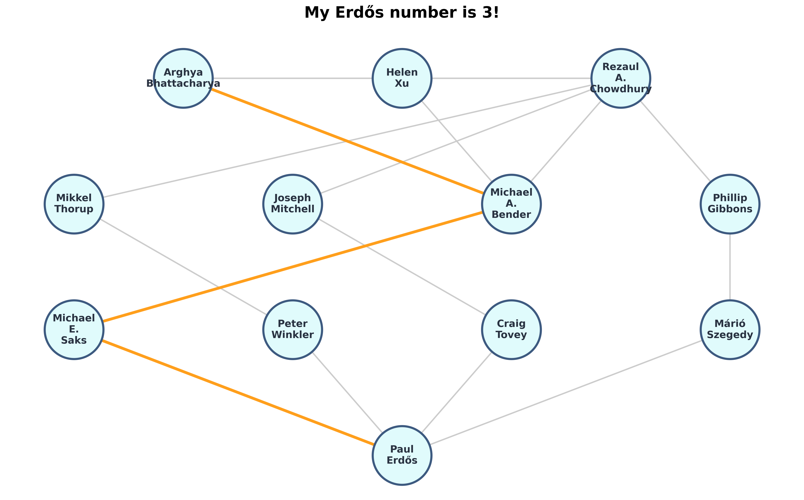

Three Hops to Paul Erdős: My Erdős Number Is 3
If you are familiar with pop culture, you have probably heard of the "Six Degrees of Kevin Bacon"—the parlor game built on the idea that any actor can be linked to Kevin Bacon through shared film roles in six steps or fewer. Long before Hollywood had Bacon numbers, the mathematical and scientific communities had their own, much older version: the Erdős number, one of my favorite pieces of academic folklore.
Who Was Paul Erdős?
Paul Erdős (1913–1996) was a brilliant, eccentric, and extraordinarily prolific Hungarian mathematician of the 20th century. Living out of a single suitcase as an itinerant scholar ("my brain is open!"), he published more than 1,500 papers with 511 direct collaborators across combinatorics, graph theory, classical analysis, and number theory. Among his landmark contributions:
- The Probabilistic Method: Erdős pioneered proving the deterministic existence of combinatorial structures by showing that a random construction satisfies the desired property with strictly positive probability—famously establishing the exponential lower bound R(k, k) > 2k/2 for diagonal Ramsey numbers (1947).
- The Elementary Proof of the Prime Number Theorem: Alongside Atle Selberg (1949), he gave the first elementary proof of the asymptotic distribution of primes, π(x) ∼ x / ln x, using real-variable techniques and Selberg's symmetry formula without invoking the complex-analytic contour integration of the Riemann zeta function ζ(s).
- The Erdős–Kac Theorem: A foundational theorem in probabilistic number theory (1940) establishing that ω(n), the number of distinct prime factors of an integer n, obeys a standard normal law: as x → ∞, the natural density of integers n ≤ x satisfying (ω(n) − ln ln n) / √(ln ln n) ≤ z converges to the standard Gaussian distribution Φ(z).
How the Erdős Number Works (The Shortest-Path Rule)
In the language of graph theory, the scientific community forms a massive undirected co-authorship graph where researchers are vertices and joint papers are edges:
- Paul Erdős himself has an Erdős number of 0.
- Anyone who co-authored a paper directly with Erdős has an Erdős number of 1 (all 511 of them).
- Anyone who co-authored a paper with someone at distance 1 (without co-authoring with Erdős directly) has an Erdős number of 2, and so on (or ∞ if no path exists).
Because researchers collaborate widely, it is common to have multiple paths back to Erdős. Formally, your Erdős number is strictly the shortest-path distance in the co-authorship graph: if you co-author a paper with someone who has an Erdős number of 4 and also with someone who has an Erdős number of 2, you inherit the minimum plus one—giving you an Erdős number of 3.
Finding My Erdős Number
I am fortunate to have worked alongside brilliant researchers—including Helen Xu, Rezaul A. Chowdhury, and my doctoral advisor, Michael A. Bender—who connected me to this mathematical lineage. While registering for the internal Erdős number badge at Google recently, I looked up my shortest co-authorship path on the American Mathematical Society's MathSciNet Collaboration Distance tool and confirmed that my Erdős number is 3!
The Three Papers in the Chain
Every edge in the MathSciNet collaboration graph corresponds to an indexed publication:
-
Hop 1 (Arghya Bhattacharya ↔ Michael A. Bender, MR4481759):
Arghya Bhattacharya, Helen Xu, Abiyaz Chowdhury, Rezaul A. Chowdhury, Rathish Das, Rob Johnson, and Michael A. Bender. When Are Cache-Oblivious Algorithms Cache Adaptive? A Case Study of Matrix Multiplication and Sorting. 30th Annual European Symposium on Algorithms (ESA 2022), LIPIcs Vol. 244, pp. 16:1–16:17.
This was a core chapter of my Ph.D. thesis at Stony Brook with my advisor, Prof. Michael A. Bender, studying how cache-oblivious divide-and-conquer algorithms behave when the available memory fluctuates dynamically. -
Hop 2 (Michael A. Bender ↔ Michael Ezra Saks, MR4849329):
Michael A. Bender, Alex Conway, Martín Farach-Colton, Hanna Komlós, Michal Koucký, William Kuszmaul, and Michael E. Saks. Nearly Optimal List Labeling. Proceedings of the IEEE 65th Annual Symposium on Foundations of Computer Science (FOCS 2024), pp. 2253–2274.
Fittingly, this paper studies the online list-labeling (packed-memory array) problem—a classic data-structure question that I also explored in my own expository notes on Packed Memory Arrays during graduate school. -
Hop 3 (Michael Ezra Saks ↔ Paul Erdős, MR0854604):
Paul Erdős, Michael Saks, and Vera T. Sós. Maximum induced trees in graphs. Journal of Combinatorial Theory, Series B, Vol. 41, Issue 1 (1986), pp. 61–79.
In this 1986 paper, Erdős, Saks, and Sós studied the maximum size of a vertex subset in a graph that induces a tree, proving tight extremal bounds in terms of graph invariants and showing that the corresponding decision problem is NP-complete.
| Bhattacharya, Arghya | coauthored with | Bender, Michael A. | MR4481759 |
| Bender, Michael A. | coauthored with | Saks, Michael Ezra | MR4849329 |
| Saks, Michael Ezra | coauthored with | Erdős, Paul1 | MR0854604 |
What I appreciate most about this three-hop chain is the technical thread connecting pure combinatorics, theoretical computer science, and modern computer systems. Erdős and Saks (1986) used extremal arguments to bound tree structures and prove hardness results in abstract graphs. Bender and Saks (2024) brought combinatorial tree hierarchies into contiguous memory—using an implicit recursive tree over array sub-intervals in a Packed Memory Array to maintain sorted order with O(log3/2 n) amortized element moves, bypassing the classic Ω(log2 n) deterministic lower bound that Saks himself co-proved. Finally, our ESA 2022 work with Bender takes those same locality-preserving recursive tree decompositions and asks how their I/O transfers behave on real multi-tenant machines where the physical cache and RAM available to a process fluctuate over time.
Visualizing Multiple Paths in the Collaboration Graph
Interestingly, once you start looking at the co-authorship graph, there are often multiple paths to Paul Erdős of the same cost (or slightly higher cost) running through different co-authors and advisors. Here is a simple Python script using networkx and matplotlib to layer and visualize the broader collaboration neighborhood after you find your Erdős path:

networkx.
Python Script: generate_erdos_graph.py (NetworkX + Matplotlib)
Click to expand / collapse ↓
import networkx as nx
import matplotlib.pyplot as plt
def generate_erdos_graph():
# 1. Create a new undirected graph
G = nx.Graph()
# 2. Define the edges based on all the collaborations
edges = [
# Your path via Bender (Length 3)
("Paul Erdős", "Michael E. Saks"),
("Michael E. Saks", "Michael A. Bender"),
("Michael A. Bender", "Arghya Bhattacharya"),
# Rezaul's Path 1 via Thorup (Length 3)
("Paul Erdős", "Peter Winkler"),
("Peter Winkler", "Mikkel Thorup"),
("Mikkel Thorup", "Rezaul A. Chowdhury"),
# Rezaul's Path 2 via Szegedy (Length 3)
("Paul Erdős", "Márió Szegedy"),
("Márió Szegedy", "Phillip Gibbons"),
("Phillip Gibbons", "Rezaul A. Chowdhury"),
# Rezaul's Path 3 via Mitchell (Length 3)
("Paul Erdős", "Craig Tovey"),
("Craig Tovey", "Joseph Mitchell"),
("Joseph Mitchell", "Rezaul A. Chowdhury"),
# Cross connections
("Rezaul A. Chowdhury", "Michael A. Bender"),
("Arghya Bhattacharya", "Rezaul A. Chowdhury"),
("Michael A. Bender", "Helen Xu"),
("Rezaul A. Chowdhury", "Helen Xu"),
("Arghya Bhattacharya", "Helen Xu")
]
G.add_edges_from(edges)
# 3. Assign nodes to "layers" based on their shortest distance to Paul Erdős
# This keeps the graph organized left-to-right
for node in G.nodes():
try:
# Calculate shortest path length to Erdős
distance = nx.shortest_path_length(G, source="Paul Erdős", target=node)
G.nodes[node]["layer"] = distance
except nx.NetworkXNoPath:
G.nodes[node]["layer"] = 5 # Fallback
# 4. Setup the visual layout
plt.figure(figsize=(16, 10))
# Use multipartite layout to arrange nodes by their 'layer' attribute
pos = nx.multipartite_layout(G, subset_key="layer", align="horizontal")
# 5. Configure visual styling
# Highlight the primary shortest path (Erdős -> Saks -> Bender -> Arghya)
primary_path = [("Paul Erdős", "Michael E. Saks"), ("Michael E. Saks", "Michael A. Bender"), ("Michael A. Bender", "Arghya Bhattacharya")]
# Draw all edges in a light gray/blue first
nx.draw_networkx_edges(G, pos, edge_color='#cccccc', width=2)
# Draw the primary shortest path bolder and in a different color
nx.draw_networkx_edges(G, pos, edgelist=primary_path, edge_color='#ff9f1c', width=4)
# Draw the nodes
nx.draw_networkx_nodes(
G, pos,
node_size=7000,
node_color='#e0fbfc',
edgecolors='#3d5a80',
linewidths=3
)
# Customize label appearance. We'll split long names into two lines for readability.
labels = {node: node.replace(" ", "\n") for node in G.nodes()}
nx.draw_networkx_labels(
G, pos,
labels=labels,
font_size=14,
font_family='sans-serif',
font_weight='bold',
font_color='#293241'
)
# 6. Clean up the plot and save
plt.axis('off')
plt.title("My Erdős number is 3!", fontsize=22, fontweight='bold', pad=30)
plt.tight_layout()
filename = "erdos_path.png"
plt.savefig(filename, format="PNG", dpi=300, bbox_inches="tight")
print(f"Graph image successfully generated and saved as '{filename}'")
if __name__ == "__main__":
generate_erdos_graph()Why It Matters: A Small-World Network of Science
The Erdős collaboration graph is one of the classic real-world examples of a small-world network, illustrating how closely connected human knowledge and scientific discovery really are—even across mathematics, computer science, physics, and biology. More than a piece of academic trivia, it is a reminder that science is not built by solitary geniuses working in isolation, but by a continuously growing web of collaboration. It is a fun privilege to be woven into that fabric just three steps away from Paul Erdős.